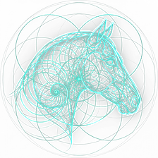
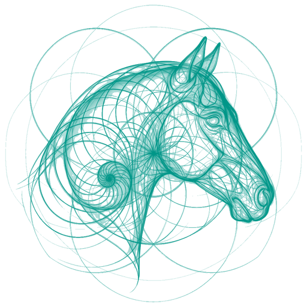

Polar H10 zeichnet am Gurt auf — kein iPhone in Reichweite nötig. Sync später per Ein-Klick.
PSFTP-Protokoll · Mehrtages-fähig
0 KBUpload
Alle Roh-Daten und Auswertungen bleiben auf deinem Gerät. Kein Account, kein Cloud-Default.
DSGVO Art. 25 Privacy-by-Design
SHA-256Integrity
Jeder JSON-Export mit Hash + Provenance-Chain — audit-fest.
W3C PROV-O · FAIR · Open-Schema
Method transparency · equine-specific
PSD bands (equine)VLF 0–0.01 · LF 0.01–0.07 · HF 0.07–0.6 Hz — angepasst an niedrigere Ruhe-HF und Atemfrequenz des Pferdes (nicht Human-TF-1996).Visser 2002 · Equine Vet J 34:280-288
RMSSD reference range (equine, at rest)80–250 ms typisch für Warmblut/Sportpferd in Ruhe — Human-Cutoffs (20–60 ms) sind nicht übertragbar.Stucke 2015 · Physiol Behav 138:95-105
AV-block classificationDetektiert werden Mobitz-Typ-I-Pausen (2°-AV-Block) — beim ruhenden Pferd physiologisch (vagaler Reflex), verschwinden bei Belastung. Keine Detektion höhergradiger Blocks.Reef 1998 · Vet Clin Equine 14:21-43
AFib screening · RR-onlyPolar H10 liefert RR-Intervalle, keine P-Wellen. Screening erfolgt über extreme RR-Irregularität (RMSSD > 302 ms Schwelle). Kein Ersatz für 12-Kanal-EKG bei Verdacht.Mitchell 2018 · J Vet Intern Med 32:1232-1240
Live-Demo · was hinten rauskommt
Lege eine Aufnahme rein — sieh die Tiefe.
Hier ist die Demo-Auswertung von Hidalgo (12 J., Warmblut, 6:28 min Ruhe-EKG via Polar H10). Kein Login, kein Upload — die echten Charts und Metriken, die auch dein Klinik-Team sehen würde.
Belastung und Erholung werden oft zu spät sichtbar.
1Problem
Klinische Untersuchung erfasst nur den Messpunkt.
Überbelastung, schleichender Stress, beginnende Regenerations-Defizite zeigen sich häufig erst, wenn sie systemisch werden — verspätet, teuer, manchmal irreversibel.
2Indikator
HRV reagiert auf autonome Veränderungen früh.
Die Herzraten-Variabilität spiegelt vagalen Tonus, sympathische Aktivierung und Erholungs-Status — oft Stunden bis Tage bevor klinische Symptome auftreten. Bei Pferden peer-reviewed seit den 2000ern.
Visser 2002 · Stucke 2015 · Younes 2017
3Lösung
CARLON macht den Mess-Workflow alltagstauglich.
Polar H10 anlegen, iPhone-App starten oder am Gurt aufzeichnen, Auswertung im Browser ansehen — 5 min Ruhe oder 24 h Langzeit. Tierarzt sieht klinische Sprache, Halter sieht laienverständliche Sprache.
Beta · join our growing cohort
Help shape an equine HRV tool built for daily clinical use.
Who we're looking for
Equine vets, clinics, sport-horse owners — anyone with a Polar H10 (or open to using one) and a handful of horses to record from.
What you get
Full Pro access during beta. iOS app + this web viewer. Direct line to Jan for every question, bug or feature wish.
What we ask in return
Use it on real horses. One 15-minute feedback call after your first recordings — what worked, what didn't, what's missing.
Reef 1998 · vagal AV-blocks physiological in resting horses
Mitchell 2018 · equine AFib screening cutoffs
Stucke 2015 · equine DFA-α₁ training zones
Brennan 2001 · Poincaré SD1/SD2
Peng 1995 · DFA scaling
Costa 2002 · Multi-Scale Entropy
Porta 2001 · Symbolic Dynamics
Baevsky 1984 · autonomic stress index
Gehlen 2020 · welfare HRV markers
Positioning: CARLON Equine is a research and observation tool. It is not a medical device under MDR or FDA. All on-screen flags are screening indicators requiring veterinarian follow-up — never diagnoses.


CARLON EQUINE
Heart Science
HRV Report
—
—
Mean HR
—
RMSSD
—
SDNN
—
DFA α₁
—
Recording
—
Duration
—
Device
—
Session ID
—
Quality
—
Schema
—
Detected research indicators
—
Notice: This report represents automated indicator markers from peer-reviewed studies (Mitchell 2018, Vitale 2020, Gehlen 2020, Reef 1998 a. o.). It does not replace clinical assessment. Diagnostic interpretation and therapeutic decisions belong exclusively to the treating veterinarian.
Is: automated computation of peer-reviewed HRV markers from an RR-interval recording
Is: a structured handoff document for the treating veterinarian
Is not: a diagnosis or replacement for clinical assessment
Is not: an MDR/FDA-cleared medical device
⚠ Clinical decisions are the veterinarian's responsibility. CARLON EQUINE provides automated marker computation from validated peer-reviewed studies. Final diagnostic interpretation, differential consideration and therapeutic decisions belong exclusively to the licensed treating veterinarian. This report is not a medical device under MDR/FDA jurisdiction.
Pro Tools for Your Own Recordings
Use CARLON EQUINE Heart Science yourself.
Polar H10 iOS app + Web Pro tool for vets, clinics, research & owners.
Recording · Analysis · Report PDF · Sharing. GDPR-compliant · Research-grade · Clinical indicator engine.
Owner
Longitudinal tracking · Web viz · One horse
Vet · Solo
Patient CRM · Live recording · Multiple horses · PDF report
Vet · Clinic
Multi-vet · Branding · Batch · Cohort compare
iOS App
Polar H10 · Live monitoring · 24h offline rec
LIVE · POLAR H10
—BPM
Beats0
Dauer0:00
Battery—
Quality—
Firmware—
Serial—
—
DRAG = PAN · TRACKPAD-PINCH ODER + / − = ZOOM · ESC = SCHLIESSEN